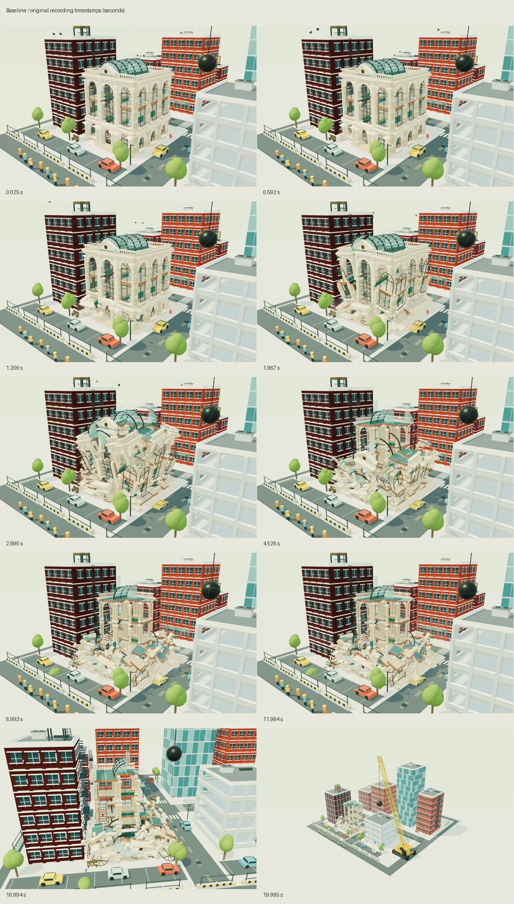
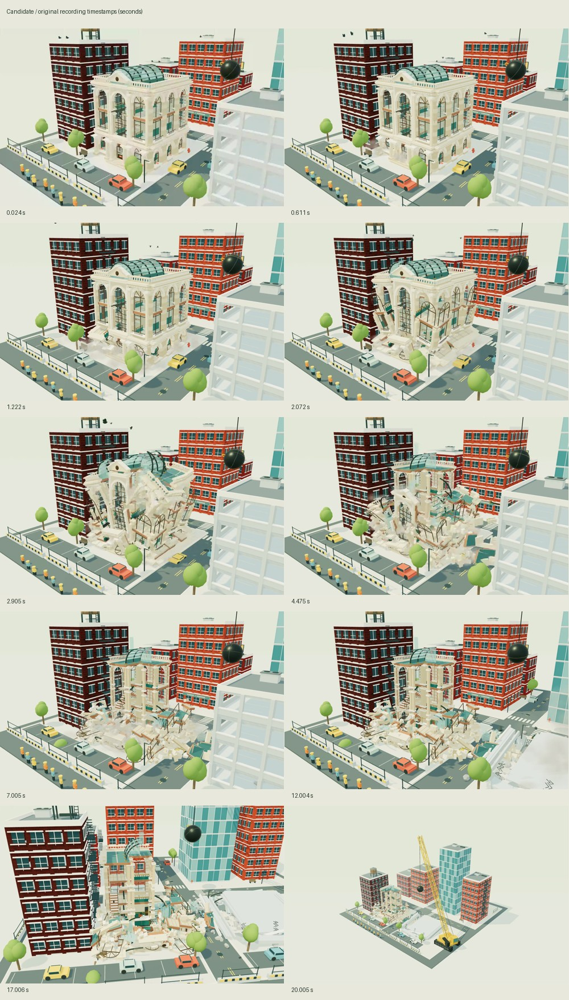

Astra · Pressure, fall, aftermath
Matched ordinary charge routes in the real district. Select one version; only its soundtrack plays. The recordings contain the application’s own output and retain elapsed time, including slow frames.
A · Checkpoint
Sound enabled in both applications. Playback volume starts at 80% for both. Switching A/B preserves the displayed recording time and pauses playback. The time-control demonstration is candidate-only. Large-collapse outcomes vary with native input and frame timing; neither recording forces a particular ruin.
Review, launch instructions and limitations · Recording, signal and timing evidence
Timestamped collapse strips

